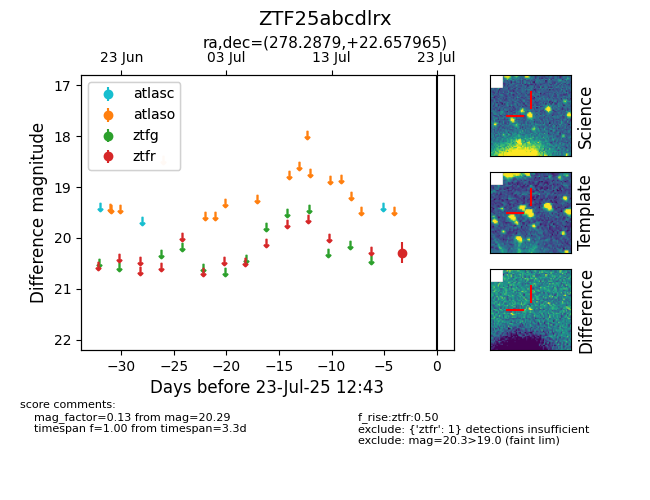

Target ZTF25abcdlrx at 2025-07-23 12:43, see:
FINK: fink-portal.org/ZTF25abcdlrx
Lasair: lasair-ztf.lsst.ac.uk/objects/ZTF25abcdlrx
ALeRCE: alerce.online/object/ZTF25abcdlrx
alt names
ZTF25abcdlrx (ztf,fink)
coordinates:
equatorial (ra, dec) = (278.2879,+22.65797)
galactic (l, b) = (51.5171,+13.95261)
photometry
last ztfr=20.29
1 ztfr detections
